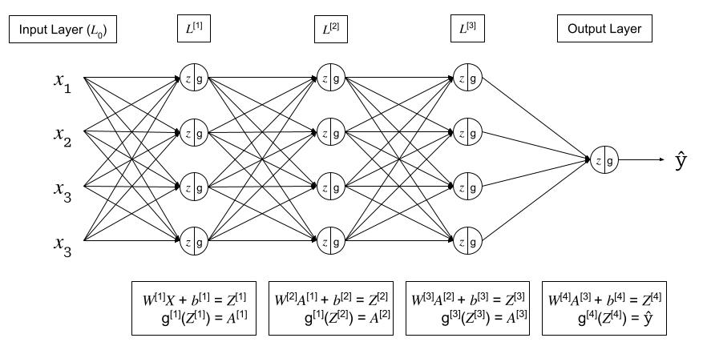

Deep Learning Notes
# Intuition about deep representation
- shallower nueral networks need exponentially more (\(2^{n-1}\)) more hidden units vs. a “small” L-layer deep neural network to compute the same function.
Forward and Backward Functions
Given the following generic deep neural network,

For each layer \(l\): \(W^{[l]}\), \(b^{[l]}\)
Forward Pass:
- Input: \(A^{[l-1]}\)
- Output: \(A^{[l]}\), where:
- \(Z^{[l]} = W^{[l]}A^{[l-1]} + b^{[l]}\) (cache for backward pass)
- \(A^{[l]} = g^{[l]}(Z^{[l]})\)
Backward Pass:
- Input: \(dA^{[l]}\)
- Output: \(dA^{[l-1]}\), \(dW^{[l]}\), \(db^{[l]}\), where:
- \(dZ^{[l]} = A^{[l]} - Y\)
- \(dW^{[l]} = \frac{1}{m} dZ^{[l]} A^{[l-1] \top}\)
- \(db^{[l]} = \frac{1}{m} \sum^m dZ^{[l]}\)
- \(dA^{[l-1]} = W^{[l]\top} dZ^{[l]}\)
- \(dZ^{[l-1]} = dA^{[l-1]} * g^{\prime [l-1]} (Z^{[l-1]}) = W^{[l]\top} dZ^{[l]} * g^{\prime [l-1]} (Z^{[l-1]})\)
Feed Forward Neural Networks Derivations
Parameters & Hyperparameters
Parameters:
- \(W^{[l]}\)
- \(b^{[l]}\)
Hyperparameters: the parameters that control the Parameters \(W\) and \(b\)
- \(\alpha\) - learning rate
- learning rate decay
- num iterations
- \(L\) - num hidden layers
- \(n^{[l]}\) - num hidden units
- \(g^{[l]}\) - activation functions
- Momentum
- \(\mathcal{B}\) - minibatch size
- regularization
How to learn hyperparamters?
In deep learning, there can be many hyperparameters. With a small amount of hyperparameters, a grid search can be conducted. In deep learning, there can be many hyperparameters, and a grid search becomes untenable. Instead, sampling at random, more unique values are able to be searched.
When searching hyperparamters, a common technique is to first conduct a coarse search over a larger range of values. Then a fine search can be conducted on a smaller region.
Regularization
Bias vs. Variance Tradeoff
Intro to regularization. - Why regularization - What is regularization?
L1 Regularization
{Visualization} {Pytorch Example}
Summary
L2 Regularization
{Visualization} {Pytorch Example}
Summary
Elastic Net Regularization
{Visualization} {Pytorch Example}
Summary
Dropout
Dropout is where, during training, some % of neurons in each layer are zeroed out or “dropped”. The neurons dropped change each batch. Dropout prevents units from co-adapting too much to the data and acts as a sampling strategy since we drop a different set of neurons each time. It effectively forces the net to learn the data without cheating.
{Visualization} {Pytorch Example}
Summary
- only used during training
Batch Normalization
{Visualization} {Pytorch Example}
Summary - check notes from NN Zero to Heroon this
Other?
Activation Functions
Sigmoid
ReLU
Argmax
Softmax
Softmax regression generalizes logistic regression to \(C\) classes. If \(C=2\), the softmax reduces to logisitc regression. Softmax is named from the contrast to “Hardmax” or Argmax function.
\[ \text{Softmax}(x_i) = \frac{\text{exp}(x_i)}{\sum_j \text{exp}(x_j)} \]
- used for multiclass classification
- normalizes outputs to sum to 1
- output can be interpreted as probabilities
Loss Function
\[ \begin{align} \mathcal{L}(\hat{y}, y) &= - \sum^n_{j=1} y_j \text{log} \hat{y}_j \ &= -y_{j=c} \text{log} \hat{y_{j=c}} \ &= - \text{log}\hat{y}_{j=c} \end{align} \]
Where: - \(j=c\) is the true label of the class - the summation goes away because all other class outputs are \(0\)
Cost Function \[ \mathcal{J}(W^{[l]}, b^{[l]}, ...) = \frac{1}{m} \sum^m_{i=1} \mathcal{L} (\hat{y}^i, y^i) \]